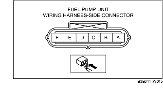

FUEL PUMP UNIT INSPECTION [ZJ, Z6, LF]
B3E011413350W03
Fuel Pump Operation Inspection
1. Connect the WDS or equivalent to the DLC-2.
2. Remove the fuel-filler cap.
3. Turn the ignition switch to the ON position.
4. Using the simulation function "FP", verify that operation sound is heard from the fuel pump when "FP" is turned from OFF to ON.
-
• If the operation sound cannot be verified, measure the voltage at fuel pump wiring harness-side connector terminal A.

-
- If as specified, inspect the following:
-
• Fuel pump continuity
-
- If not within the specification, inspect the following:
-
• Fuel pump relay
-
• Wiring harnesses and connectors between main relay-fuel pump relay-fuel pump
-
Standard
-
B+ (Ignition switch at ON)
Continuity Inspection
1. Disconnect the negative battery cable.
2. Disconnect the fuel pump unit connector.
3. Inspect for continuity between fuel pump unit terminals A-E.
-
• If there is continuity, perform the "Circuit Open/Short Inspection".
-
• If there is no continuity, replace the fuel pump.
Circuit Open/Short Inspection
1. Inspect the following wiring harnesses for an open or short circuit (continuity check).
Open circuit
-
• If there is no continuity, the circuit is open. Repair or replace the harness.
-
- Fuel pump unit terminal A and fuel pump relay terminal D
-
- Fuel pump unit terminal E and body GND
Short circuit
-
• If there is continuity, the circuit is short. Repair or replace the harness.
-
- Fuel pump unit terminal A and body GND
-
- Fuel pump unit terminal E and power supply
Fuel Static Pressure Inspection
-
Note
-
• The fuel static pressure inspection cannot be performed because the pressure regulator is integrated with the fuel pump unit.